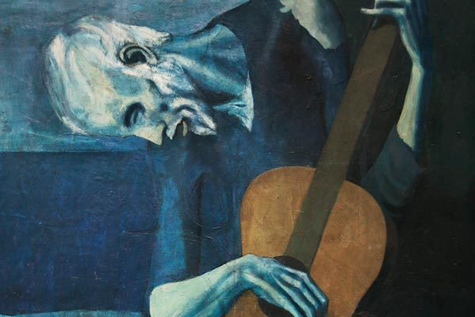

Este cuadro muestra la imagen lánguida de un mendigo tocando la guitarra, en el que predominan los característicos tonos azules del llamado Período azul de Picasso. Mediante el uso de estas tonalidades frías (incluso en el color de la piel), acentúa la tristeza del anciano. A pesar de esto, mantiene la guitarra de un color marrón, como muestra de esperanza para el mendigo, ya que se trata de su único medio de subsistencia. Además se trata de un elemento de contraste en el cuadro ya que las líneas curvas de la guitarra se diferencian mucho del cuerpo delgado y anguloso del viejo. Son estas características alargadas las que recuerdan al manierismo, en concreto al estilo de El Greco.
El color azul domina el cuadro, se trata de un color frío, como fría y monócroma es la situación del vulnerable mendigo. La cabeza cae hacia abajo enmarcando con ella horizontalmente el cuadro como enmarcada se encuentra la perspectiva de su vida frágil y vulnerable. Nuestros ojos se dirigen a la diagonal de la guitarra, es la que pone la única nota de color. Tal vez porque sea su esperanza de ganarse la vida a través de ella o tal vez la música, el arte en sí como remedio a sus penas. Tanto física como simbólicamente, el instrumento llena el espacio que el delgado cuerpo deja vacío. La guitarra es, probablemente, el único medio que el pobre mendigo tiene para sobrevivir al hambre
l viejo guitarrista ciego fue realizado durante el Período azul de Picasso, que abarca desde el suicidio del amigo del pintor, Carlos Casagemas en 1901, hasta su establecimiento en París en 1904, que da origen al período Rosa de Picasso. Durante esta época, Picasso vivía en Barcelona, y se dedicaba a reflejar en sus cuadros la pobreza (que el mismo había experimentado hasta 1902), el aislamiento y el pesimismo con la que se sentía tan identificado. La ceguera pasó a ser un tema recurrente a lo largo de su obra, motivado por su miedo a perder la vista, como le ocurrió previamente a su padre. Recientemente, en el seminario “La época azul: nuevas lecturas a través del estudio técnico” en el Museu Picasso (febrero de 2015), se dieron a conocer una serie de nuevos descubrimientos sobre este cuadro del pintor malagueño
